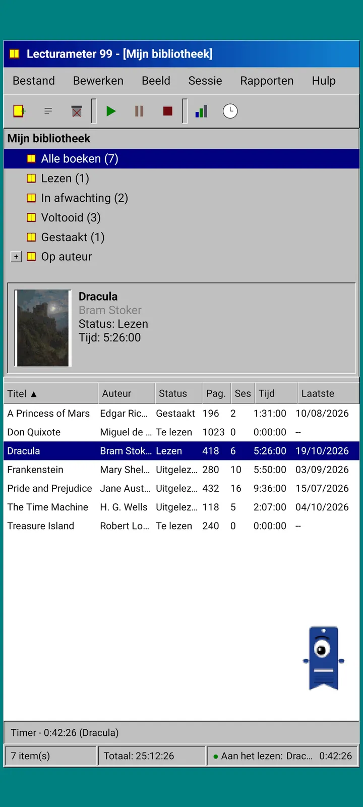
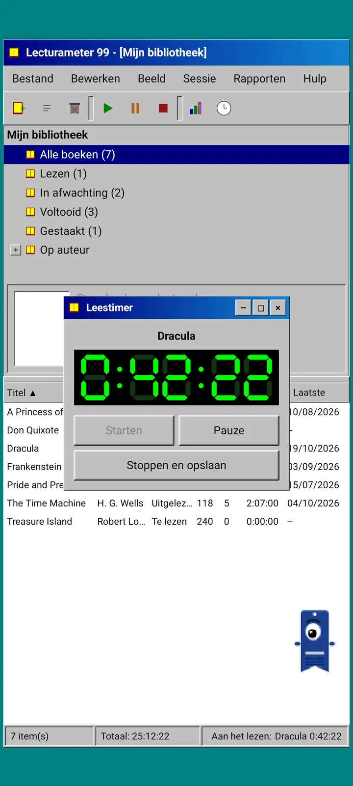
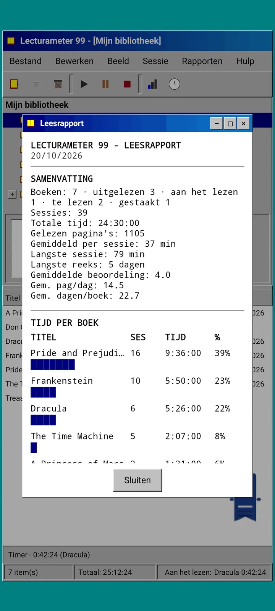
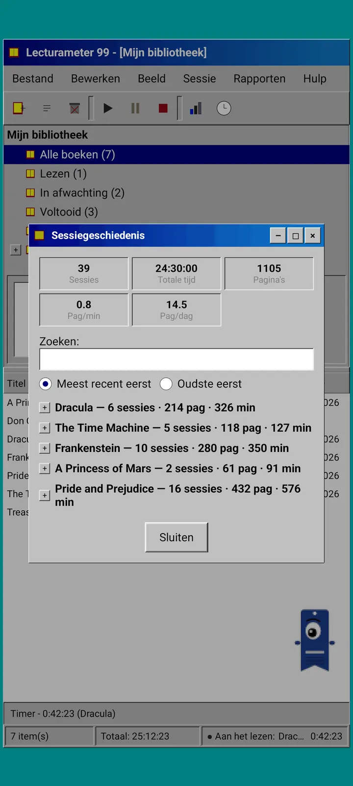
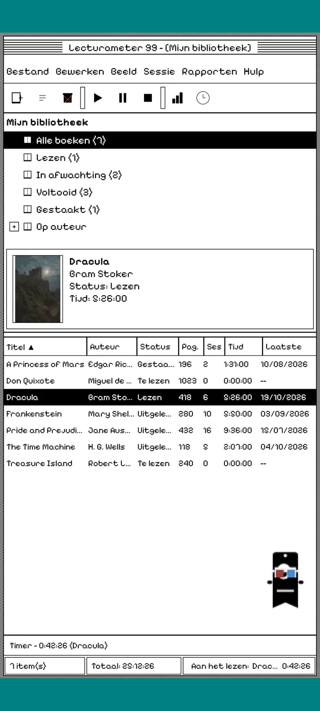
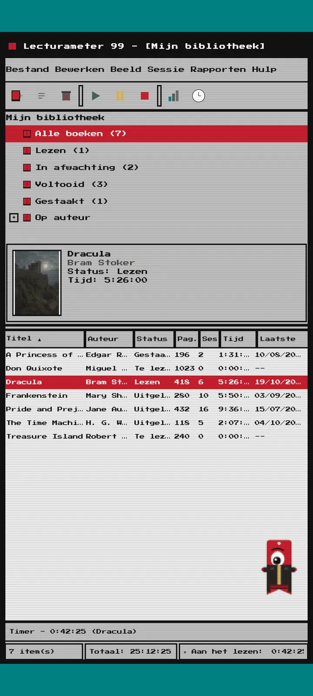
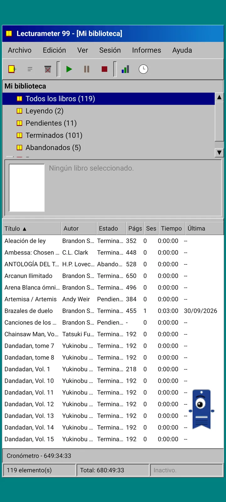

Lecturameter 1999
Lecturameter alsof je het in 1999 vanaf een cd-rom had geïnstalleerd. Een alternatieve client voor de app, met vensters, menu's en tabellen, die je echte back-ups opent.

Wat het is
Een desktopprogramma uit de late jaren negentig op je telefoon. Eén venster op een blauwgroen bureaublad, een menubalk, een werkbalk, een mappenboom, een volle tabel en een statusbalk.
- Bibliotheek als boom: alle boeken, aan het lezen, nog te lezen, uitgelezen, gestopt en per auteur
- Tabel met titel, auteur, status, pagina's, sessies, tijd en laatst gelezen. Tik op een kolomkop om te sorteren
- Echte boekenzoeker, met dezelfde catalogus die Lecturameter gebruikt
- Importeert en exporteert de back-up van Lecturameter en de CSV van Goodreads. Je gegevens gaan erin en eruit zonder dat er iets verloren gaat

Waarom het bestaat
Een experiment: het idee van Lecturameter vanaf nul opnieuw opbouwen vanuit radicaal andere ontwerpprincipes, zonder de echte app aan te raken. Van alle herinterpretaties vond ik die uit 1999 het leukst, dus ik heb hem als leuke oefening afgemaakt en er een volledige client van gemaakt. Hij is bewust eenvoudiger dan Lecturameter: het is een experiment en wordt in principe niet verder ontwikkeld.
- Timer in een zwevend venster met een groen lcd-display. Je kunt hem verplaatsen, minimaliseren naar een taakbalk en hij blijft doortellen in de statusbalk
- Als je stopt, vraagt het dialoogvenster voor het opslaan van de sessie naar je pagina's en berekent het je tempo, net als Lecturameter
- Opgeslagen sessies zijn Lecturameter-sessies: ze komen terug in de moderne app als je een back-up van Lecturameter 1999 exporteert en die in Lecturameter importeert.

Leesrapport
De statistieken zijn een afgedrukt rapport: samenvatting, tijd per boek met blokbalken, snelheid in pagina's per dag, een jaarkalender getekend in tekens en de laatste zeven dagen.

Sessiegeschiedenis
Sessies per boek gegroepeerd in een boom met plus en min, met bovenaan vijf cijfers: sessies, totale tijd, pagina's, pagina's per minuut en pagina's per dag.

Sessie opslaan
Datum, minuten, eerste en laatste pagina, opmerking. Het overzicht berekent pagina's en tempo terwijl je typt. Kom je bij de laatste pagina, dan vraagt het of je het boek hebt uitgelezen.

Pagi 99
Ook Pagi reist naar 1999: gepixeld en los op het scherm, zoals de kantoorassistenten uit die tijd. Je kunt Pagi verslepen, er komt een zinnetje als je erop tikt en tips verschijnen in gele ballonnetjes.
Thema's
Klassiek 98 is gratis en standaard. Het pakket voegt er nog zes toe, elk met een eigen achtergrond en eigen geluiden.

Kies het in het menu Beeld
Beeld, Thema... opent een venster met de zeven thema's. De wijziging geldt meteen voor alle vensters, de timer en Pagi.
- Klassiek 98, gratis en standaard: grijze vensters, marineblauwe titelbalken en een blauwgroen bureaublad
- Themapakket: 1984, Gombal, Geheugen, Torens, Kern en 8-bit
- Elk thema heeft een eigen bureaubladachtergrond en eigen geluiden voor tikken, vensters en de timer
- Met Beeld, Themageluiden zet je de geluiden uit als je in stilte leest

Klassiek 98
Grijze vensters, marineblauwe titelbalken en een blauwgroen bureaublad. Gratis, en de app opent ermee.

1984
Een zwart-wit bureaublad van één bit, met stippenpatronen en vierkante vensters.

Gombal
Doorschijnend gekleurd plastic, ronde knoppen en strepen op de achtergrond.

Geheugen
De menu's van een discconsole uit de jaren negentig, in donkerblauw.

Torens
Nog een discconsole uit de jaren negentig, nachtblauw met lichtblauwe lijnen.

Kern
Een zwart-groene console, als een scherm dat nooit uitgaat.

8-bit
Dikke pixels, weinig kleuren en blokletters.

Probeer het voordat je betaalt
Tik op een vergrendeld thema en de hele app schakelt erop over. Sluit je zonder te kopen, dan komt het vorige thema terug.
Schermbeveiligingen
Ze verschijnen alleen als de timer loopt en je je telefoon met rust laat. Ze wachten 1, 3 of 5 minuten, of nooit. Eén tik en je bent terug, en de timer blijft doortellen.

Vliegende boeken
Pixelboeken die met hun kaften over een zwart scherm fladderen.

Letterveld
Letters uit allerlei alfabetten die voorbij zweven, als een sterrenveld.

Paginabuizen
Buizen van pagina's die zichzelf tekenen tot het scherm vol is.

Stuiterende Pagi
Pagi die tegen de randen van het scherm stuitert.

Leesklok
De sessietijd in grote lcd-cijfers.

Kostuums voor Pagi
Acht kostuums voor Pagi 99. Je kiest ze via Beeld, Kostuum van Pagi..., en je kunt ze passen voordat je betaalt.
- Cassettespeler
- Pet achterstevoren
- 3D-bril
- Neon zonnebril
- Diskette in de hand
- Leren jack
- Zakhuisdiertje
- Kartonnen kroon
Winkel
De app is gratis en compleet om je leeswerk bij te houden. Wat je kunt kopen verandert alleen hoe hij eruitziet.
De hele app, zonder tijdslimiet.
- Bibliotheek, zoeken, timer en sessies
- Leesrapport en sessiegeschiedenis
- Back-up van Lecturameter en CSV van Goodreads, heen en terug
- Thema Klassiek 98 en Pagi 99
- Geen account en geen advertenties
Eenmalige betalingen, geen abonnementen.
- Themapakket, €3.49: 6 thema's met achtergrond en geluiden, plus de schermbeveiligingen
- Schermbeveiligingen, €1.99: de 5 schermbeveiligingen
- Kostuums voor Pagi, €1.99: de 8 kostuums
- Heel 1999, €4.49: thema's, schermbeveiligingen en kostuums
Optionele fooien in het menu Help, als je me op een koffie wilt trakteren.
Thema's en kostuums kun je live proberen voordat je betaalt. Sluit je zonder te kopen, dan komt terug wat je had.
Wat er anders is dan in Lecturameter
Hetzelfde als in Lecturameter
- Dezelfde gegevens: boeken, sessies, statussen, scores en notities. Het back-upbestand is in beide apps hetzelfde.
- Boeken zoeken op titel of auteur.
- Echte timer: hij blijft op de achtergrond doortellen, zelfs als je de app sluit.
- Geen account, geen advertenties, geen verbinding behalve om boeken te zoeken.
- Dezelfde talen als Lecturameter.
Alleen in de editie van 1999
- Een desktopinterface uit 1999. Geen Material.
- Echte vensters: je versleept ze, minimaliseert ze en sluit ze met het kruisje.
- Leesrapport in tekst, met een kalender getekend in tekens.
- Contextmenu bij lang indrukken en sneltoetsen als je een toetsenbord aansluit.
- Gepixelde Pagi 99 met tipballonnetjes.
- Optionele thema's met eigen achtergrond en geluiden, schermbeveiligingen terwijl de timer loopt en kostuums voor Pagi.
Wat er bewust niet in zit
- Geen Pro en geen abonnement. Je leeswerk bijhouden is helemaal gratis, de winkel verkoopt alleen uiterlijk.
- Geen uitdagingen, bingo's, jaarlijkse Wrapped of widgets.
- Geen immersieve sessie, sfeergeluiden of back-up naar Google Drive. De back-up wordt als bestand opgeslagen.
Gesloten test
Lecturameter 1999 is in gesloten test op Google Play. iOS komt later, nog zonder datum.
- Word lid van de groep groups.google.com/g/lecturameter-1999
- Meld je aan als tester op play.google.com/apps/testing/com.lecturameter.r1999
- Installeer hem via Google Play
In gesloten test op Google Play, iOS later. Lees het blogbericht om te zien waar het vandaan komt en wat je kunt verwachten.